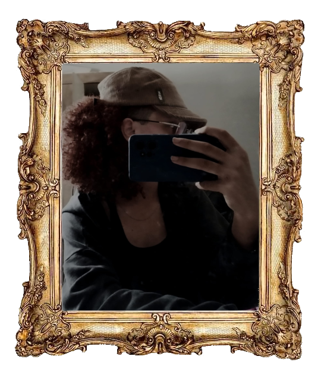

poetisa
Esta poetisa escreve com toda a alma, o nome dela é Anna. Não é famosa, muito menos conhecida, mas ela carrega sonhos, grandes sonhos, de ter uma vida tranquila, de ser conhecida pela sua arte, publicar um livro que nele esteja escrito seus sentimentos antigos e atuais também.
Cada poesia é um sentimento, uma experiência, um momento único da vida dela, e com estas simples poesias ela deseja conquistar o mundo que há dentro de si.